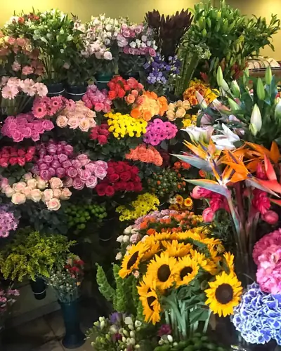
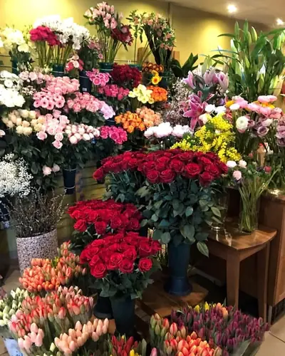
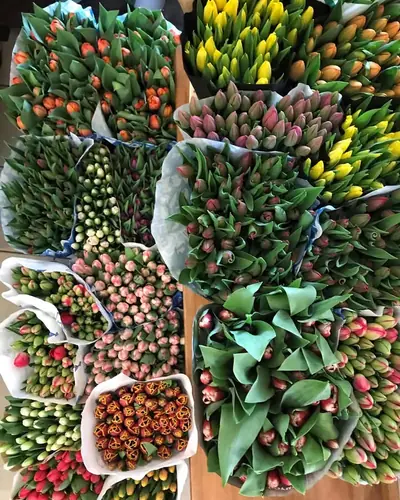
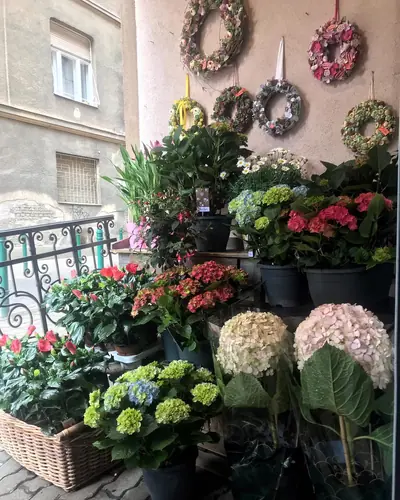

Kézzel kötött ajándékcsokrok
Friss, szezonális és klasszikus csokrok születésnapra, névnapra, évfordulóra vagy csak azért, hogy mosolyt csaljon valaki arcára.
Friss vágott virágok, szívvel-lélekkel kötött egyedi csokrok és alkalmi dekoráció — a Mester utca és a Bokréta utca sarkán.
2010 óta válogatjuk a legszebb hazai és import vágott virágokat, valamint cserepes dísznövényeket a Mester utca és a Bokréta utca sarkán. Legyen szó egy spontán meglepetéscsokorról, menyasszonyi csokorról vagy meghitt megemlékezésről, nálunk mindig friss virágot, őszinte tanácsot és személyre szabott kötészetet talál.
Gondosan válogatott szálas virágok, amelyek napokig megőrzik szépségüket a vázában.
Nincs két egyforma alkalom: a csokrot az Ön elképzelése és költségkerete szerint állítjuk össze.
A hétköznapi figyelmességtől a nagy családi ünnepekig minden virágkötészeti kérést örömmel valósítunk meg.
Friss, szezonális és klasszikus csokrok születésnapra, névnapra, évfordulóra vagy csak azért, hogy mosolyt csaljon valaki arcára.
Menyasszonyi csokrok, dobócsokrok, kitűzők és asztaldíszek személyes egyeztetéssel, az esküvő hangulatához hangolva.
Tartós szobanövények otthonra vagy irodába, valamint ízléses ajtódíszek és kegyeleti koszorúk megrendelésre.
Adja le rendelését online vagy telefonon: a csokrot a kért időpontra elkészítjük, vagy Budapesten belül házhoz visszük.
Válasszon egy stílust, kattintson a gombra, és az űrlapon máris előkészítjük Önnek az összeállítást.

Rózsák, gerberák és napraforgók élénk, napsütéses összeállításban — születésnapra és meglepetésnek.

Bársonyos piros rózsák és illatos liliomok — tökéletes választás évfordulóra vagy szerelmes alkalomra.

Friss, roppanós tulipánok natúr csomagolásban — letisztult, modern ajándék bármelyik napra.

Kézzel font koszorúk és válogatott cserepes hortenziák otthoni dísznek vagy méltó megemlékezésre.
Írja meg, milyen alkalomra és milyen hangulatú csokrot szeretne — rövidesen visszajelzünk a részletekkel.
Valódi fotók a Bokréta Sarok mindennapjaiból — kattintson a képekre a nagyításhoz.
131 Google-értékelés alapján 4,7 ★ · a vásárlók 98%-a szívből ajánlja
„Mindig gyönyörű a kínálat, és nagyon kedves a kiszolgálás.”
„Nagyon kedves a hölgy, gyönyörű menyasszonyi csokrokat készített nekem! Nagyon köszönöm!”
„17 éve csak elismeréssel és köszönettel tartozunk ennek a virágüzletnek. Mindig kitűnő minőségű az áru, segítőkész és kedves a kiszolgálás.”
„Szebbnél szebb csokrokat készítenek, rendszeresen járok ide, mindig nagyon kedvesek és segítőkészek. Mindig friss virágok vannak készleten.”
„Nagyon segítőkészek és gyönyörű csokrokat kötnek, amik sokáig megmaradnak.”
„Nagyon kedves kiszolgálás, gyönyörű virágok — a legboldogabb és legszomorúbb pillanatokban is számíthattunk rájuk.”
Szezonális ajándékcsokrot akár aznap is tudunk kötni az üzletben található friss virágokból. Ha különleges virágfajtát, nagyobb csokrot vagy esküvői/alkalmi dekorációt szeretne, érdemes 2–5 nappal korábban jelezni, hogy biztosan beszerezzük a legszebb szálakat.
A megrendelt csokrot nyitvatartási időben (H–P 9:00–19:00, Szo 8:00–16:00) személyesen átveheti a Mester utca és Bokréta utca sarkán, így nem kell sorban állnia. Igény esetén előzetes egyeztetéssel Budapesten belül házhozszállítást is vállalunk.
Minden csokrot frissen metszve adunk át. Otthon tegye tiszta, hűvös vízbe, kétnaponta cserélje a vizet, és vágjon vissza 1 cm-t a szárakból ferdén. Kerülje a közvetlen tűző napot és a fűtőtestek közelségét.
Igen, üzletünkben készpénzes és bankkártyás fizetésre is van lehetőség, előrendelés esetén pedig átutalással is rendezheti a megrendelést.
Kérdése van, vagy gyorsan félretetetne egy csokrot? Hívjon minket bizalommal, vagy írjon üzenetet.